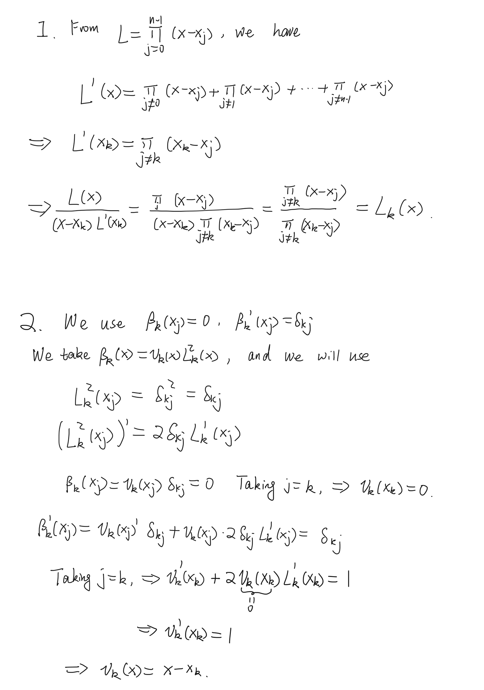
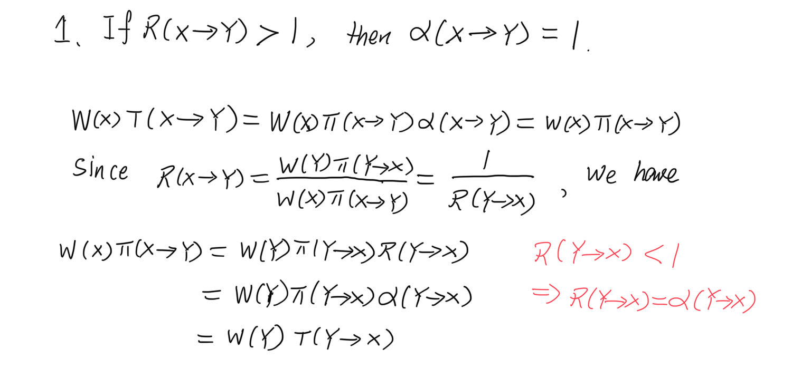

To do the error analysis, let us perform the Taylor expansion:
\begin{align*}
f(x) & =f(x_{j}+\frac{h}{2})+(x-x_{j}-\frac{h}{2})f'(x_{j}+\frac{h}{2})+\frac{1}{2}(x-x_{j}-\frac{h}{2})^{2}f''(x_{j}+\frac{h}{2})+\dots\\
& =f(x_{j}+\frac{h}{2})+(x-x_{j}-\frac{h}{2})f'(x_{j}+\frac{h}{2})+\frac{1}{2}(x-x_{j}-\frac{h}{2})^{2}f''(\xi_{j})
\end{align*}
where \xi_{j} is a point between x and x_{j}+\frac{h}{2}. With this, we can write
\int_{x_{j}}^{x_{j+1}}f(x)\,dx=\int_{x_{j}}^{x_{j+1}}dx\,\left[f(x_{j}+\frac{h}{2})+(x-x_{j}-\frac{h}{2})f'(x_{j}+\frac{h}{2})+\frac{1}{2}(x-x_{j}-\frac{h}{2})^{2}f''(\xi_{j})\right]
Let us define
u=\frac{x-x_{j}-h/2}{h}\quad\Rightarrow\quad du=dx/h.
We have
\begin{align*}
\int_{x_{j}}^{x_{j+1}}f(x)\,dx & =\int_{-1/2}^{1/2}du\left[hf(x_{j}+\frac{h}{2})+h^{2}uf'(x_{j}+\frac{h}{2})+\frac{h^{3}}{2}u^{2}f''(\xi_{j})\right]\\
& =hf(x_{j}+\frac{h}{2})+\frac{h^{3}}{24}f''(\xi_{j}).
\end{align*}
Thus, the single-panel error is
\mathcal{E}_j = \frac{h^3}{24}f''(\xi_j).
The the composite version error
\mathcal{E} = \sum_{j=0}^{n-1}\frac{h^3}{24}f''(\xi_j) = \frac{(b-a)h^2}{24}\overline{f''}.
Problem 2 Simpson’s rule weights
First, notice that (x_{i}-x_{i+1})=-h, (x_{i}-x_{i+2})=-2h, (x_{i+1}-x_{i+2})=-h. We further introduce
u=\frac{x-x_{i+1}}{h},\quad dx=hdu
We have
L_{i}(x)=\frac{(x-x_{i+1})(x-x_{i+2})}{(x_{i}-x_{i+1})(x_{i}-x_{i+2})}=\frac{h^{2}u(u-1)}{2h^{2}}=\frac{u(u-1)}{2}
L_{i+1}(x)=\frac{(x-x_{i})(x-x_{i+2})}{(x_{i+1}-x_{i})(x_{i+1}-x_{i+2})}=\frac{h^{2}(u+1)(u-1)}{-h^{2}}=1-u^{2}
L_{i+2}(x)=\frac{(x-x_{i})(x-x_{i+1})}{(x_{i+2}-x_{i})(x_{i+2}-x_{i+1})}=\frac{h^{2}u(u+1)}{2h^{2}}=\frac{u(u+1)}{2}
w_{i}=\int_{x_{i}}^{x_{i+2}}dxL_{i}(x)=h\int_{-1}^{1}du\frac{u(u-1)}{2}=h\int_{0}^{1}du\,u^{2}=\frac{h}{3}
w_{i+1}=\int_{x_{i}}^{x_{i+2}}dxL_{i+1}(x)=h\int_{-1}^{1}du\,(1-u^{2})=2h(1-\frac{1}{3})=\frac{4h}{3}
w_{i+2}=\int_{x_{i}}^{x_{i+2}}dxL_{i+2}(x)=h\int_{-1}^{1}du\,\frac{u(u+1)}{2}=\frac{h}{3}.
Week 12

Week 13

Problem 2
Calculating the following integral using Monte Carlo method:
I = \int_{x^2+y^2\leq 1} dxdy\, e^{-(x^2+y^2)}x^2
Let us first work out it analytically.
\begin{align*}
\frac{\int_{x^{2}+y^{2}\leq1}dxdy\,\exp(-(x^{2}+y^{2}))x^{2}}{\int_{x^{2}+y^{2}\leq1}dxdy\,\exp(-(x^{2}+y^{2}))} & =\frac{\int_{0}^{1}rdr\int_{0}^{2\pi}d\theta\exp(-r^{2})r^{2}\cos^{2}\theta}{2\pi\int_{0}^{1}rdr\exp(-r^{2})}\\
& =\frac{\int_{0}^{1}dr\,r^{3}\exp(-r^{2})\int_{0}^{2\pi}d\theta\,\cos^{2}\theta}{\pi(1-1/e)}\\
& =\frac{\int_{0}^{1}dr\,r\exp(-r)}{2(1-1/e)}\\
& =\frac{(e-2)}{e}\times\frac{e}{2(e-1)}\\
& =\frac{e-2}{2(e-1)}\\
& \simeq 0.21
\end{align*}
import numpy as npdef w(x): x_sq = np.sum(x**2)if (x_sq >1):return0.else:return np.exp(-x_sq)def f(x):return x[0]**2def initialize():return np.random.uniform(-0.5,0.5,2)def propose_new(x,theta):return x + theta * np.random.uniform(-1,1,2)def monte_carlo(w, f, theta,n_sample, discard_m): x = initialize() wx = w(x) fs = [] accept_num =0for jj inrange(discard_m+n_sample): y = propose_new(x,theta) wy = w(y)if (wx>wy): alpha = wy/wx xi = np.random.uniform(0,1)if (alpha >= xi): x = y wx = wy accept_num +=1else: x = y wx = wy accept_num +=1 fs.append(f(x)) accept_prob = accept_num/n_sample/nm fs = np.array(fs) fs = fs[discard_m:]return np.sum(fs)/n_sample, accept_probif__name__=='__main__': theta =1.2 n_sample =100000 discard_m =2000 integral,accept_prob = monte_carlo(w,f,theta,n_sample,discard_m)print("Integration = ", integral)print("Acceptance probability is", accept_prob)
Integration = 0.2109238240290859
Acceptance probability is 0.39084